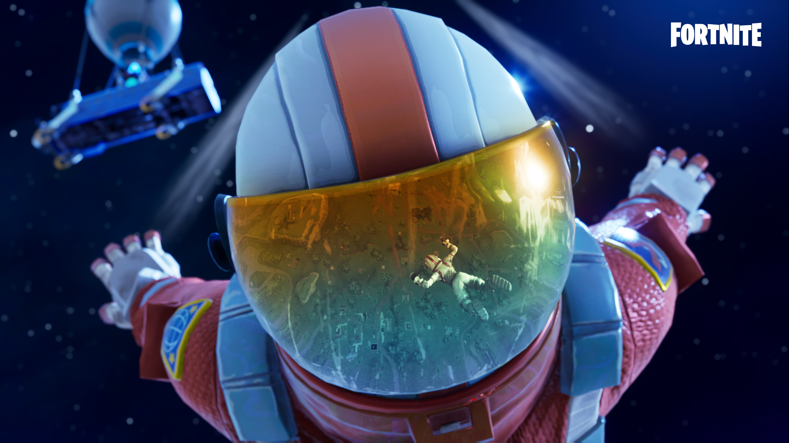
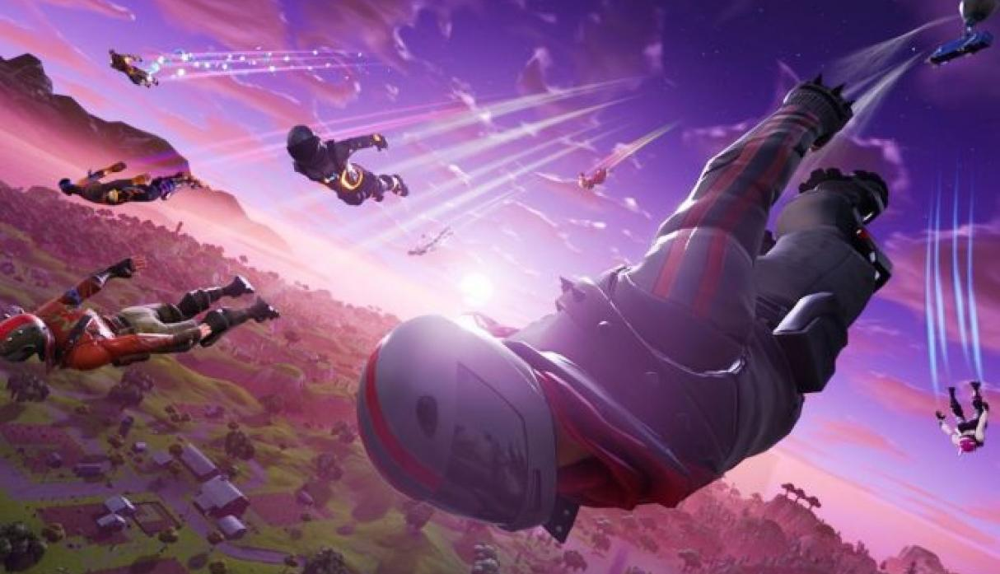

- 
-

-

- 
-

Mejores momentos Battle Royale
Battle Royale
Parches v7.00
- Avión Alatormenta X-4
- 5 ocupantes en total.
- Espacio para 4 pasajeros (en las alas) y un piloto.
- Tiene una ametralladora montada. Cuidado: puede sobrecalentarse.
- Los jugadores pasarán al estado de descenso al salir del Alatormenta X-4.
- Usad los botones de girar para realizar giros bruscos.
- Al pulsar ambos, el avión volará boca abajo.
- Tocad dos veces los botones de girar para hacer un tonel.
- Se puede usar un acelerador y un aerofreno para disfrutar de mayor movilidad.
- Se han modificado los globos para que sea posible usar armas y objetos mientras están equipados.
- Los jugadores pueden atarse hasta 3 globos a la espalda. Al equiparse el tercero, despegarán del suelo.
- Pulsad Saltar mientras estéis en el aire para soltar globos de uno en uno.
- Se ha reducido el tamaño de acumulación de 20 a 10.
- Se ha actualizado el punto de mira del fusil de asalto con mira y del fusil de asalto con mira térmica.
- Aviso: cada nueva temporada nos da la oportunidad de evaluar la rotación actual de los objetos. Nuestro objetivo es tener un número razonable de objetos por descubrir, evitar duplicados o solapar la funcionalidad. Con base en las recientes (y próximas) adiciones de objetos, hemos seleccionado los siguientes para guardar.
- Piedra de sombra
- Fuerte portátil
- Fresquera
- Lapa
- Escopeta de doble cañón
- Granada de choque
- Actualización del mapa
- Nuevo bioma: iceberg
- Nueva ubicación: Aeródromo Ártico
- Nueva ubicación: Pico Polar
- Nueva ubicación: Aldehuela Alegre
- También han aparecido otros lugares sin nombre por la isla.
- Hay superficies heladas por las zonas nevadas.
- Los jugadores se deslizarán sobre determinadas superficies congeladas.
- Se pueden encontrar tirolinas en torno al iceberg y cerca de puestos de avanzada.
- Enganchaos y desplazaos de un extremo a otro.
- Podéis apuntar, disparar y utilizar objetos mientras os movéis con las tirolinas.
- Se ha actualizado el minimapa.
- Se ha aumentado la probabilidad de que los últimos círculos acaben en los bordes exteriores del mapa.
- Corrección de errores
- Se ha corregido un error que provocaba que se reprodujesen efectos de impacto de arma al disparar a aliados a pesar de no infligir daño.
- Nuevo torneo: Copa limitada Explorador
- Se ha establecido el límite de materiales en 700/500/300 para madera, piedra y metal.
- Los jugadores reciben 100/50/50 de madera, piedra y metal por cada eliminación.
- Se ha aumentado el índice de recursos un 40 %.
- Los jugadores reciben +50 de salud real por cada eliminación.
- Cambios de zona segura
- Se han aumentado las probabilidades de que aparezcan entregas de suministros en los círculos posteriores.
- Ahora el noveno círculo se mueve el doble de rápido, pero tarda el doble en cerrarse.
- Ahora algunos torneos cuentan con un límite de partidas que se pueden jugar durante una sesión del evento.
- Corrección de errores
- Se ha corregido un error que impedía que los jugadores recibiesen recompensas de eliminación si un jugador al que habían derribado era eliminado por acabarse el tiempo de este estado o si eliminaban a todo su equipo.
- Se ha optimizado la aparición de objetos al eliminar a un jugador.
- Se ha optimizado el rendimiento de la mecha de la dinamita.
- Se han aplicado mejoras al rendimiento del sonido en Switch: los sonidos de caída ya no tienen tirones.
- Se han aplicado pequeñas mejoras a la renderización en Switch para mejorar la frecuencia de imágenes general.
- Se ha reducido el volumen del sonido de impacto de las balas y los picos en la isla inicial.
- Se ha añadido una notificación sonora de impacto cuando recibe daño un vehículo en el que vais montados.
- Corrección de errores
- Se ha corregido un error que provocaba que se siguiese reproduciendo el sonido de ala delta en el aire al eliminar a un jugador que iba en ala delta.
- Se ha corregido un error que provocaba que los bucles de sonido de los vehículos se quedasen atascados.
- Se ha corregido un error que provocaba que se oyese un sonido de "chisporroteo" en móvil y Switch al disparar armas o usar gestos.
- Se han desplazado los desafíos de Calamidad, Lobuno, Ragnarok y Deriva a una nueva sección en la parte inferior de la pestaña Desafíos.
- Se han añadido filtros y se ha actualizado la distribución de la taquilla.
- Se han añadido cifras de daño a vehículos.
- Ahora los vehículos muestran cifras de daño con un color exclusivo.
- Se ha mejorado la distribución de la tienda para que quepan más casillas sin necesidad de desplazarse.
- Se ha aplicado una pequeña actualización a la IU para informar de jugadores con la que se han añadido categorías de informes y una lista con el resto de jugadores en la partida actual o la última partida disputada.
- Corrección de errores
- Se ha corregido un error que provocaba que se mostrase la información del pase de batalla en la pestaña Sala para jugadores que no lo habían adquirido.
- Se ha corregido el encabezado de los desafíos diarios en la pantalla Desafíos para que funcione correctamente al hacer clic.
- Se ha trasladado el botón de momentos destacados con NVIDIA a la parte superior derecha de la sala de Battle Royale para evitar conflictos con la zona de clic del chat.
- Se ha corregido un error que provocaba en ocasiones que la pantalla de autenticación en dos pasos dejase de responder a las interacciones.
- Corrección de errores
- Las placas identificativas ya no se superpondrán a otros elementos del HUD como el mapa.
- Se ha habilitado la frecuencia de imágenes de 60 FPS en iPad Pro 2018.
- Se ha restablecido el antialiasing 4x MSAA en iOS.
- Se ha mejorado el rendimiento en todos los dispositivos Galaxy Note 9 y en la versión norteamericana del Galaxy S9 Plus.
- Ahora el Samsung Galaxy A9 (2018) es compatible.
- Corrección de errores
- Se ha corregido el borde negro en iPad Pro 2018.
- Se han corregido los ajustes gráficos en modelos anteriores de iPad Pro compatibles.
- Se han corregido unos ajustes de calidad incorrectos en la sexta generación de iPad.
- Se ha corregido un error que provocaba en ocasiones sombras titilantes en la sala.
- Esta es una versión de lanzamiento anticipado, así que es posible que sufráis cuelgues del cliente, pérdida de progreso u otros errores inesperados.
- Las islas de jugadores son espacios creativos con guardado automático.
- La central creativa os permite acceder a vuestra propia isla, las islas de amigos que se hayan unido al servidor o las islas destacadas de la comunidad.
- Los jugadores podrán mantener activo un servidor hasta 4 horas por sesión.
- Los propietarios del pase de batalla empezarán con 4 islas para poder tener distintas creaciones. El 13 de diciembre, todos los jugadores recibirán 4 islas.
- Vuestros amigos pueden visitar vuestra isla, y los propietarios pueden establecer permisos para determinar si sus amigos pueden editar o construir durante su visita.
- El menú Mi isla está disponible a través del menú principal del juego mientras estéis en vuestra isla.
- Teléfono
- Esta es la herramienta en el juego que el personaje sostiene y utiliza para editar, copiar y manipular los elementos del mundo. Experimentad con sus funciones para descubrir todo lo que os permite hacer.
- El modo de vuelo permite a los jugadores desplazarse rápidamente por su isla y crear en el aire.
- Saltad dos veces para empezar a volar.
- Menú Mi isla
- La pestaña "Juego" inicia y finaliza las partidas creadas por los jugadores. Cuando se finaliza una partida, la isla vuelve a su estado original.
- La pestaña "Ajustes del juego" establece la salud, el daño de caída, la ubicación de aparición, etc., y permite realizar modificaciones en cualquier momento desde el menú Mi isla.
- La pestaña "Herramientas de la isla" restablece el estado original de la isla y determina quién puede construir en ella.
- Se accede desde el menú del inventario.
- El inventario os permite generar elementos prefabricados, dispositivos, armas o consumibles.
- Usad el inventario para crear vuestros propios cofres o llamas para vuestra isla y llenadlos con los objetos que queráis.
- Los elementos prefabricados son estructuras prediseñadas que el jugador puede colocar en su isla mediante objetos que se lanzan.
- Los dispositivos son objetos colocables que os permiten crear juegos.
- 8 pistas de obstáculos.
- 25 edificios de Battle Royale.
- 34 galerías de casillas y elementos de construcción.
- Nuevos: bloque de hielo, raíles de daño, potenciadores de velocidad, cronómetros, tablas de puntuaciones y puntos de aparición de jugador.
- De Battle Royale: trampas de pinchos, fresqueras, camas elásticas, plataformas de lanzamiento, torretas montadas y fogatas acogedoras.
- La barra de memoria en la parte inferior del HUD proporciona información sobre cuánto podéis construir en vuestra isla.
- Esto cambiará a medida que vayamos recopilando más datos sobre el rendimiento y el uso de memoria.
- Los jugadores podrán unirse a partidas en curso de cualquiera de sus amigos de Epic, incluso si no están juntos en un grupo. Encontrad a vuestro amigo en el panel social y seleccionad "Unirse a servidor creativo". Vuestro amigo debe haber establecido su configuración de privacidad en "Amigos" o "Público" para permitir que se unan quienes no estén en un grupo.
- El sistema de repeticiones grabará la sesión de juego de 4 horas al completo, aunque lo hará en archivos individuales de 30 min cada uno.
- Las repeticiones están desactivadas de manera predeterminada y se pueden habilitar en los ajustes.
- Se han añadido botones para el modo Creativo y un nuevo ajuste de visibilidad "creativa". Hay botones con más funcionalidades en la herramienta de disposición del HUD.
- La visibilidad "creativa" está desactivada de manera predeterminada en la herramienta, así que los botones estarán ocultos hasta activarlos.